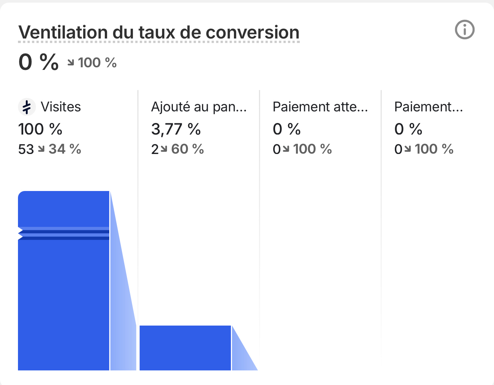

Personne
n'en parle.
dans le business en ligne
Hier · mon record

Chiffre d'affaires
619 €
Bénéf dans ma poche
≈ 0 €
Aujourd'hui
0
vente
Shop 1
0 vente
Shop 2
0 vente
mais j'ai pas trop peur.
Juste
0 visites
Dépense des campagnes
c'est normal.
Et quand même, des ajouts au panier

Très très bons signaux
J'en profite pour bien faire
Shop 3
en construction
Shop 4
en construction
J'avais vu une vidéo de
Vincent Alonzi
« Quand ça commence à chiffrer, mieux vaut se taire. »
Je continue.
Le but de ce compte
documenter.
dès que j'arrive au
1K/day
je vous le dis
Tu veux suivre ?
Like
Abonne-toi